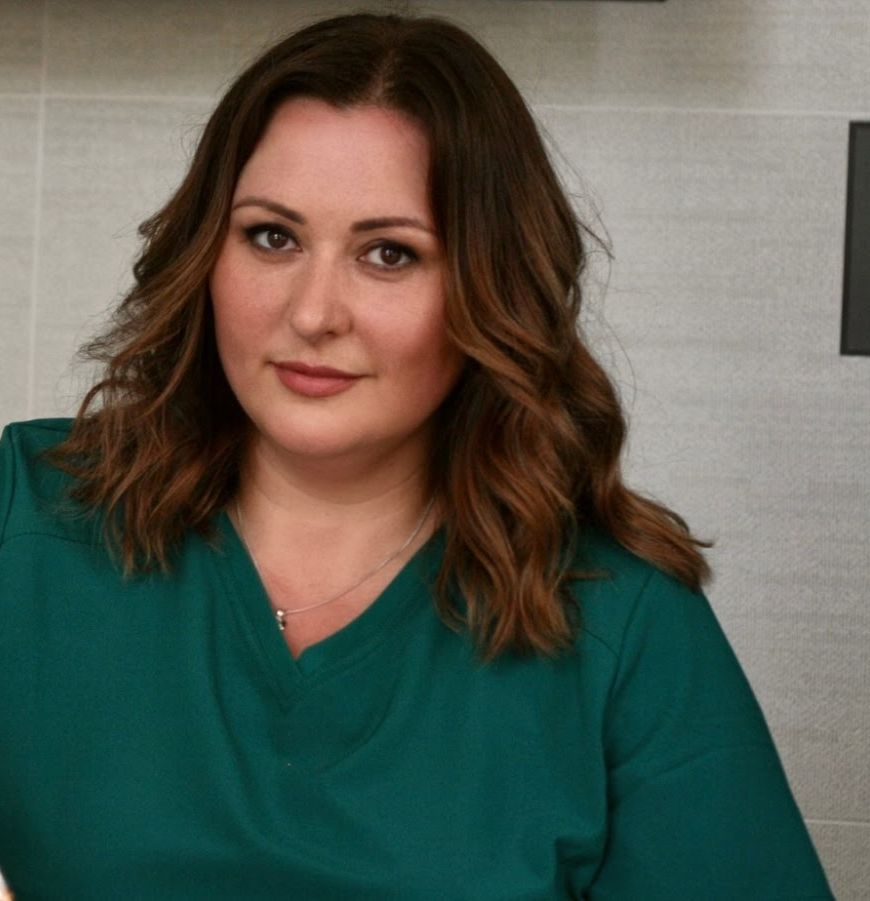
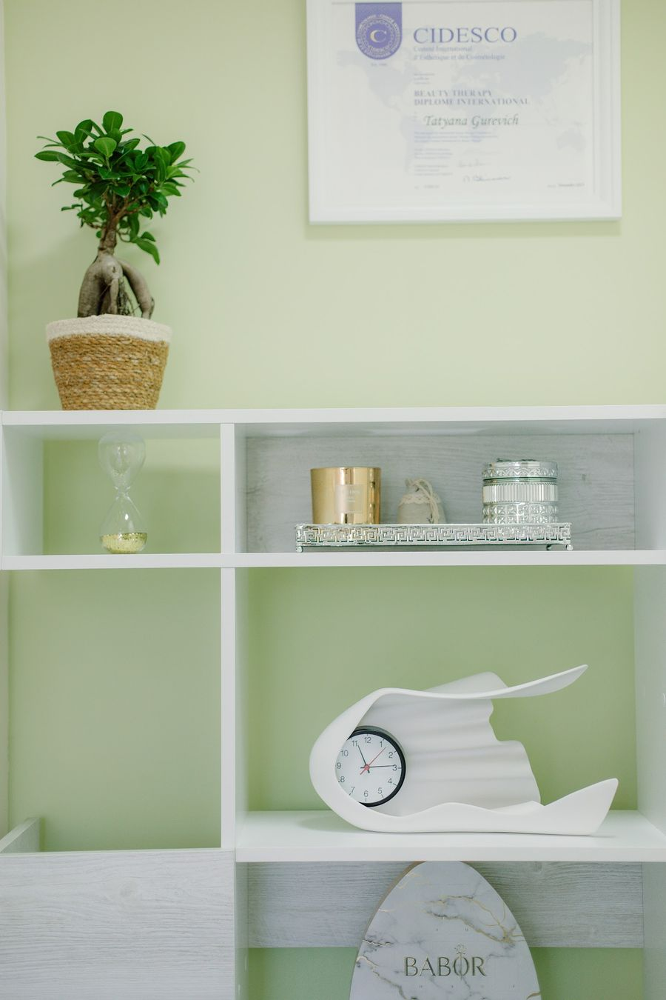
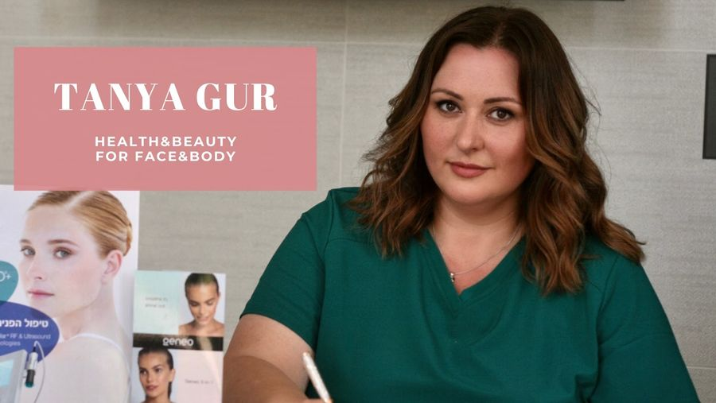
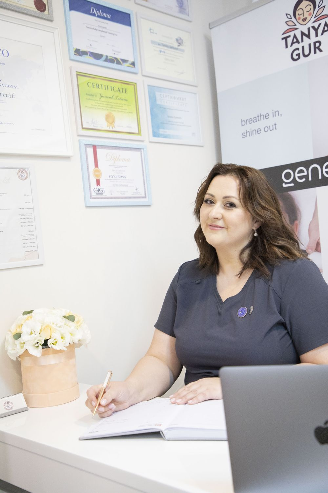
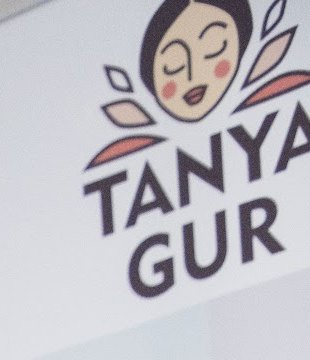

הסרת שיער בלייזרLaser hair removal
בחדר הטיפולים, עם משקפי מגן למטופלת.In the treatment room, with protective glasses for the client.
קונספט לדוגמה שנבנה עבור טניה גור · זה אינו האתר הרשמי של העסקA sample concept built for Tanya Gur · This is not the business’s official website

בריאות ויופי, לפנים ולגוףHealth & beauty for face & body
קוסמטיקאית ברחוב ורדיה 12 בחיפה: טיפולי פנים, הסרת שיער בלייזר ואבחון עור.A cosmetician at 12 Vardia St, Haifa: facials, laser hair removal and skin analysis.
מה עושים בחדר הטיפולים של טניה.What happens in Tanya’s treatment room.
בחדר הטיפולים, עם משקפי מגן למטופלת.In the treatment room, with protective glasses for the client.

בחדר שקט, בקצב של הטיפול.In a quiet room, at the pace of the treatment.
המוצרים שעל המדף בסטודיו.The products on the studio’s shelf.

כך טניה כותבת על העבודה שלה: לפנים ולגוף.How Tanya puts her own work: for face and body.
מכשיר אבחון בסטודיו: מצלמה בתוך טבעת של אורות.A skin-analysis device in the studio: a camera inside a ring of lights.

טניה גור מקבלת בסטודיו שלה, ברחוב ורדיה בחיפה.Tanya Gur sees clients in her own studio on Vardia Street, Haifa.
“ניקוי פנים ללא כאבים. והקוסמטיקאית טטיאנה היא מומחית מוסמכת מאוד ומצאה גישה לעור הבעייתי שלי.”
“A pain-free facial cleansing. Tatiana the cosmetician is a highly qualified expert and found the right approach to my problem skin.”

פינה בסטודיוA corner of the studio
מתוך הביקורת של Natalie ZumchenkoFrom Natalie Zumchenko’s review
מדף המוצריםThe product shelf
“יחס אישי ומקצוענות, המקום נקי, רגוע.”
“Personal attention and professionalism; the place is clean and calm.”
Natalie Zumchenko · translated from Hebrew
מה מתאים לך?What would you like?
מטופלת כחצי שנה, מאוד מרוצה. טיפול מקצועי יחס מעולה ונעים ואמין. ממשיכה להגיע לטיפולים גם בימים אלו. ממליצה בחום.
I’ve been a client for about half a year and I’m very happy. Professional treatment, excellent, pleasant and reliable care. I still keep coming for treatments. Warmly recommended.
מקום מעולה לאלה שרוצות להתפנק מדי פעם. אווירה, מקצועיות, מחירים סבירים - ותוצאות שחלמתן עליהן! מאוד מומלץ!
A great place for anyone who wants to pamper herself now and then. Atmosphere, professionalism, fair prices – and the results you dreamed of! Highly recommended!
ניקוי פנים ללא כאבים. והקוסמטיקאית טטיאנה היא מומחית מוסמכת מאוד ומצאה גישה לעור הבעייתי שלי.
A pain-free facial cleansing. Tatiana the cosmetician is a highly qualified expert and found the right approach to my problem skin.
יחס אישי ומקצוענות, המקום נקי, רגוע, הבנין עם חניות בתוך הבנין, ממש נוח.
Personal attention and professionalism; the place is clean and calm, and the building has parking inside it – really convenient.
שירות מעולה, הצוות מאוד נעים ואמפתי, רק רגשות חיוביים מההליך.
Excellent service, the staff are very pleasant and empathetic – only good feelings from the treatment.
ברחוב ורדיה 12 בחיפה. לפי אחת הביקורות, יש חניות בתוך הבניין.At 12 Vardia St, Haifa. According to one review, there is parking inside the building.
טיפולי פנים וניקוי פנים, הסרת שיער בלייזר ואבחון עור. לפרטים על טיפול מסוים, כדאי לשאול את טניה בוואטסאפ.Facials and facial cleansing, laser hair removal and skin analysis. For details on a particular treatment, ask Tanya on WhatsApp.
ראשון עד חמישי 9:00–21:00, שישי 8:00–14:00. בשבת סגור.Sunday to Thursday 9:00–21:00, Friday 8:00–14:00. Closed on Saturday.
בוואטסאפ או בטלפון, 053-973-9849.On WhatsApp or by phone, 053-973-9849.
ורדיה 12, חיפה12 Vardia St, Haifa